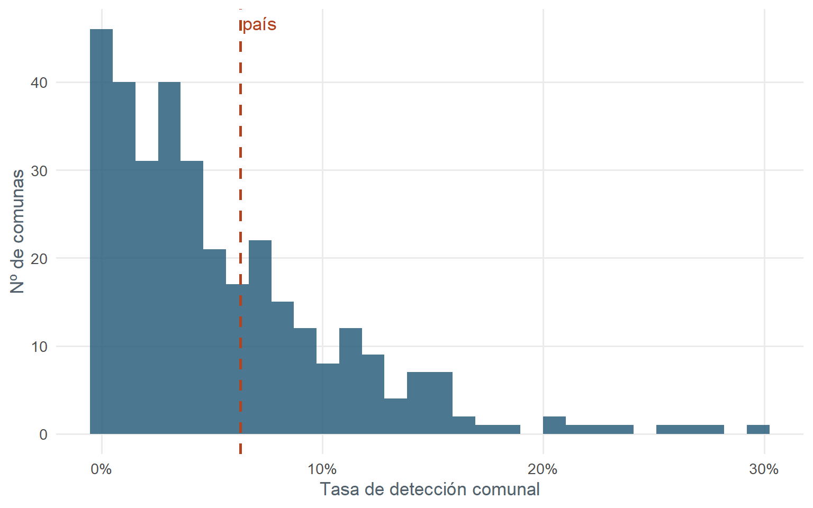

¿Cuánta demencia esperada está bajo control en la red pública?
La demencia tiene una frecuencia conocida por edad, así que se puede estimar cuántas personas mayores con demencia se esperan en cada comuna. De todas ellas, solo cerca de 1 de cada 16 está bajo control en la salud mental pública. La diferencia —la brecha— es del 93.7 %.
La cuenta, en una resta
Brecha = 1 − ( personas bajo control / personas esperadas )
= 1 − ( 13.114 / 205.843 ) ≈ 93,7 %
Numerador: 13.114 personas de 65+ bajo control SM por demencia (corte diciembre, atención primaria + especialidad).
Denominador: demencia esperada en la población pública (FONASA), 205.843 personas. Usar la población pública —y no la total— evita contar a quienes están en isapres y nunca usan la red pública.
Por qué el denominador correcto importa
ver código
d <-data.table(Denominador =c("Población total (INE)", "Población pública (FONASA)"),`Esperados 65+`=c(244338, 205843),`Tasa detección`=c("5,4 %", "6,3 %"),Brecha =c("94,6 %", "93,7 %"))knitr::kable(d, align ="lrrr")
Denominador
Esperados 65+
Tasa detección
Brecha
Población total (INE)
244338
5,4 %
94,6 %
Población pública (FONASA)
205843
6,3 %
93,7 %
Al limpiar el denominador no solo se corrige la cifra (de 94,6 % a 93,7 %): también se vuelve justa la comparación entre territorios y emerge la señal territorial (ver ¿Dónde vive la variación? y Territorio).
Distribución de la detección entre comunas
ver código
b <- bre[esperados >0& tasa_deteccion <=0.30]ggplot(b, aes(tasa_deteccion)) +geom_histogram(bins =30, fill = COL_PRIMARY, alpha = .85) +geom_vline(xintercept = pais$tasa_deteccion, color = COL_ALERT, linewidth =1, linetype =2) +annotate("text", x = pais$tasa_deteccion, y =Inf, vjust =1.5, hjust =-0.05,label ="país", color = COL_ALERT) +scale_x_continuous(labels = scales::percent) +labs(x ="Tasa de detección comunal", y ="Nº de comunas") +theme_rem()

Distribución de la tasa de detección comunal (recortada a 30 % para legibilidad).
La brecha del 93,7 % marca un punto de partida medible, recalculable cada año con el mismo código. Las palancas que el análisis respalda: priorizar lo rural y extender los dispositivos del Plan Nacional de Demencia, que se asocian a mayor detección.
El numerador es bajo control de salud mental, no toda la atención de demencia. La brecha mide la visibilidad de ese subsistema, no demencia sin ningún contacto. Detalle en Robustez y en la Fundamentación estadística (PDF).